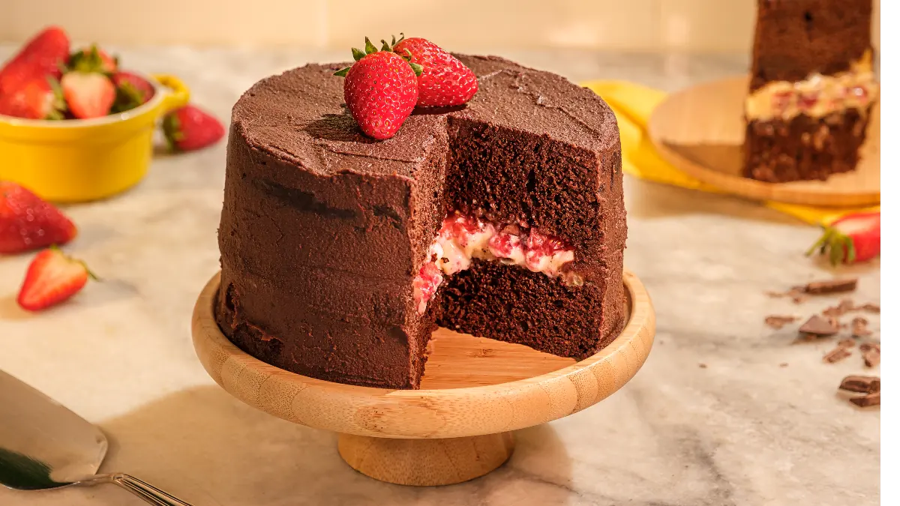

Nossas Receitas
Bolo de Morango
Itens Utilizados:
- Chocolate
- Farinha de trigo
- Morango
- açucar
- ovo
- fermento
- manteiga
Modo de Preparo:
Em um liquidificador adicione os ovos, o chocolate em pó, a manteiga, a farinha de trigo, o açúcar e o leite, depois bata por 5 minutos. 2 Adicione o fermento e misture com uma espátula delicadamente. 3 Em uma forma untada, despeje a massa e asse em forno médio (180 ºC) preaquecido por cerca de 40 minutos. Não se esqueça de usar uma forma alta para essa receita: como leva duas colheres de fermento, ela cresce bastante! Outra solução pode ser colocar apenas uma colher de fermento e manter a sua receita em uma forma pequena. 4 Calda Em uma panela, aqueça a manteiga e misture o chocolate em pó até que esteja homogêneo. 5 Acrescente o creme de leite e misture bem até obter uma consistência cremosa. 6 Desligue o fogo e acrescente o açúcar.
Macarrão

Itens Utilizados:
- Macarrão
- molho de tomate
- queijo ralado
- manjericão
- alho
- azeite
- sal
Modo de Preparo:
Frite o alho em 3 colheres (de sopa) de azeite e espere dourar um pouco, mas não deixe queimar.Adicione o molho de tomate, 1/2 copo de água, manjericão e 1 pitada de sal (o molho deve ficar um pouco mais salgado). Deixe cozinhar. Em uma panela maior, coloque bastante água e deixe ferver. Coloque o macarrão e espere ficar al dente. Escorra e coloque no molho já pronto. Coloque o queijo ralado nos pratos e se quizer, adicione um pouco de azeite.